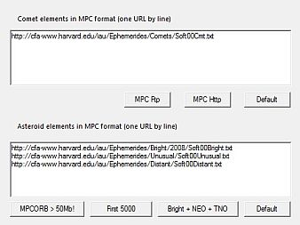
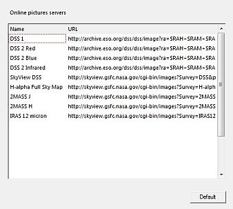

Internet
 De afbeeldingen internet_proxy.jpg, internet_orbit.jpg zijn verouderd en zouden vervangen moeten worden. Dit vermindert niet de bruikbaarheid van dit document.
De afbeeldingen internet_proxy.jpg, internet_orbit.jpg zijn verouderd en zouden vervangen moeten worden. Dit vermindert niet de bruikbaarheid van dit document.
Proxy
 Via het menu: Instellingen → Internet → Proxy
Via het menu: Instellingen → Internet → Proxy
- HTTP Proxy
Als via een proxy met het Internet verbonden bent, dan moet Cartes du Ciel/Sterrenkaarten wat gegevens van de proxy hebben om met het Internet te kunnen werken.
De gegevens zijn:
- Proxy host IP adres of hostname van de proxy.
- Proxy port port-nummer om met de proxy te communiceren.
- Gebruikersnaam de gebruikersnaam om met de proxy te verbinden.
- Paswoord het paswoord dat nodig is om met de proxy te verbinden.
De standaard is om geen poxy te gebruiken. Als je geen proxy nodig hebt, dan heb je deze gegevens ook niet nodig
- FTP wordt door het programma gebruikt om grote bestanden te downloaden vanaf MPC, een 'anonymous' verbinding is hiervoor vereist. Als je erg aardig bent, dan vul je hier je e-mail adres in als paswoord. Hoe dan ook, gebruikelijk zal het downloaden met alles werken, zolang er maar ergens een ”@” in het paswoord zit.
Je kunt ervoor kiezen om niet steeds een bevestigingsknop te hoeven klikken als je data wilt downloaden van de online gegevensbronnen. Hiervoor moet je het vinkje weghalen uit het selectievakje “Vraag bevestiging voor iedere Internet verbinding”, onderaan dit tabje.
Baanelementen

Via het menu: Instellingen → Internet → Baanelementen
Hier kun je de MPC URL's opgeven die Cartes du Ciel/Sterrenkaarten zal gebruiken om de baanelementen te downloaden van kometen en planetoïden.
{kind=link}
Kometen
Het bovenste invoergebied bevat de URL's voor kometen. Je kunt de site en het protocol kiezen door een klik op een van de vier knoppen:
- astro.cz HTTP komeetgegevens via het HTTP protocol
- MPC FTP comet data from cfa-ftp.harvard.edu via het FTP protocol
- MPC HTTP zelfde als bovenstaande, nu via het HTTP protocol
- Standaard stelt de URL in op dezelfde als die van MPC HTTP.
Planetoïden
Het onderste invoergedeelte toont de MPC URL's die het programma gebruikt voor planetoïden. Ook hier kun je de bron voor je baanelementen selecteren door een klik op een knop. Je hebt nu zes mogelijkheden:
- MPCORB > 70MB! voor een volledig bestand (meer dan 300.000 planetoïden, FTP protocol vereist)
- Eerste 5000 voor een keuze van 5000 planetoïden (bestand wordt gedownload van de CdC site)
- Helder + NEO + TNO Voor drie MPC lijsten van planetoïden (heldere, ongebruikelijke, en ver weg bewegende)
- Standaard is dezelfde als Eerste 5000 + NEO + TNO.
- astro.cz > 70B! Een MPC-mirror gelegen in de Tsjechische Republiek. 300.000 planetoïden, via HTTP
- Eerste 5000 + NEO + TNO 5000 planetoïden + de ongebruikelijke, en ver weg bewegende
Online DSS

Via het menu: Instellingen → Internet → Online DSS
Hier kun je de URL's instellen die naar de DSS en soortgelijke servers wijzen om FITS-afbeeldingen van te downloaden. Iedere regel in de lijst heeft een naam en een URL. Je vindt de naam terug als een korte identificatie voor de lange URL. De URL's beschrijven waar en exact hoe de afbeeldingen door het programma worden gedownload. (zie bijvoorbeeld de DSS Site voor details).
{kind=link}
De namen kun je gebruiken om de bron van je afbeeldingen te selecteren. Maak je selectie door een klik op het  icoontje van de objectenbalk, of via Kaart → Haal DSS afbeelding.
icoontje van de objectenbalk, of via Kaart → Haal DSS afbeelding.
Als je een ervaren gebruiker bent en je weet behoorlijk goed wat je doet, dan kun je meer rijen toevoegen aan dit dialoogvenster. Je zult niets kapot maken als de syntax verkeerd is, het ergste dat kan gebeuren is dat het programma niet in staat is om een afbeelding te verkrijgen vanwege een misvormde URL.
Eerst moet je achterhalen wat de syntax en het type van parameters is dat de server kan verwerken. ALs je dat weet, dan kun je de variabelen invullen als parameters van de waardes die het programma automatisch naar de server zal zenden.
Klik nu op een lege regel, voeg links een korte, beschrijvende naam in. Rechts vul je de complete URL in met op de juiste plaats de van toepassing zijnde variabelen die het programma zal genereren.
Het onderstaande lijstje geeft een overzicht van de variabelen die het programma gebruikt om de query-URL's te genereren.
| Cartes du Ciel variabele | betekenis |
|---|---|
| $RAH | Centrale coördinaten, Rechte klimming uren |
| $RAM | Centrale coördinaten, Rechte klimming minuten |
| $RAS | Centrale coördinaten, Rechte klimming seconden |
| $DED | Centrale coördinaten, Declinatie graden, Noord van hemelequator wordt voorafgegaan door +, zuid door - |
| $DEM | Centrale coördinaten, Declinatie minuten |
| $DES | Centrale coördinaten, Declinatie seconden |
| $RAF | Centrale coördinaten, Rechte klimming, in decimale graden |
| $DEF | Centrale coördinaten, Declinatie, decimale graden. Noord van de hemelequator is weergegeven zonder teken, zuid wordt voorafgegaan door - |
| $XSZ | Beeldveld in X richting, decimale minuten, precisie 3 cijfers |
| $YSZ | Beeldveld in Y richting, decimale minuten, precisie 3 cijfers |
| $FOVX | Beeldveld in X richting, decimale graden, precisie 6 cijfers |
| $FOVY | Beeldveld in Y richting, decimale graden, precisie 6 cijfers |
| $PIXX | Pixels in X richting |
| $PIXY | Pixels in Y richting |
Om meer te lezen over het URL-formaat in queries, lees het ASU document.
Om meer te lezen hoe je afbeeldingen download van DSS, klik hier.
Om meer te lezen hoe je deze afbeeldingen weergeeft, klik hier.
Om meer te lezen over de configuratie voor het gebruik van DSS, klik hier.